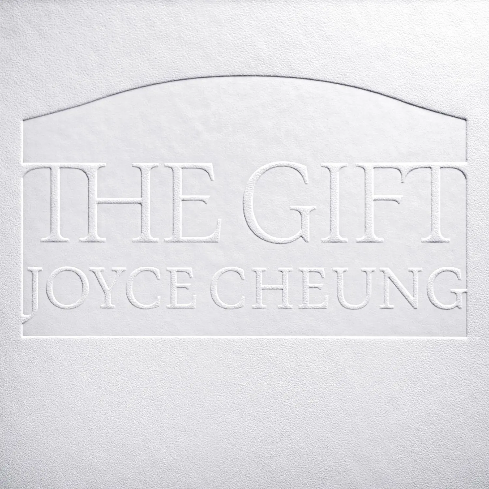
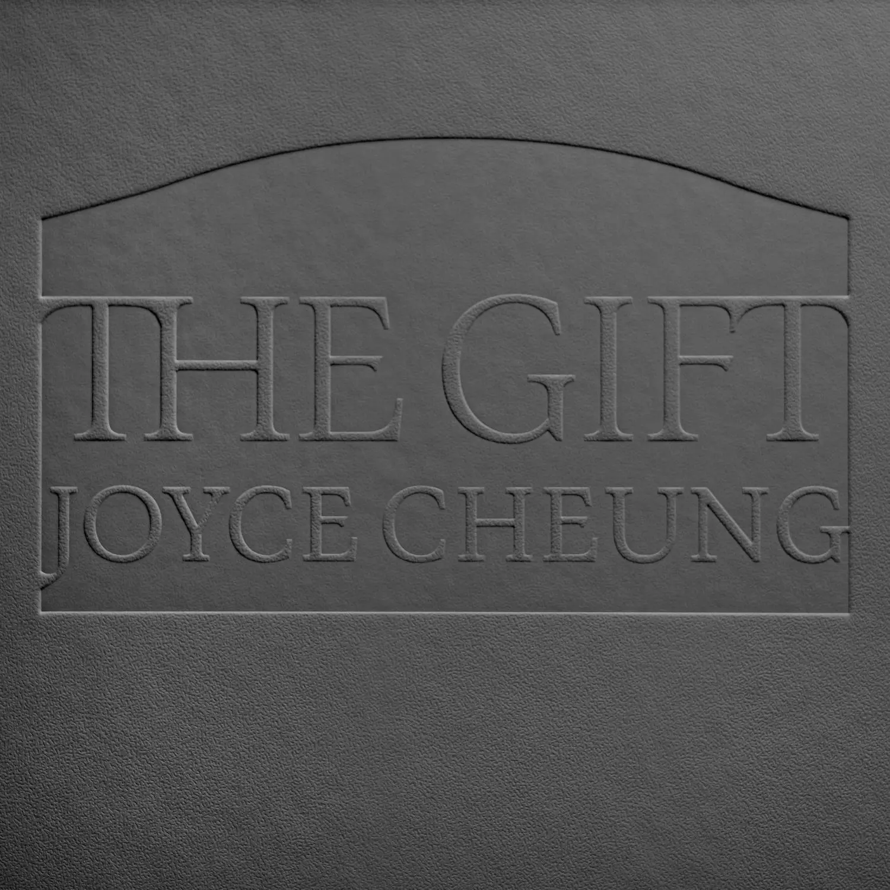

Album#35
The Gift
{kind=link}

专辑信息
- 专辑名称： The Gift (Day Version)
- 歌手： Joyce Cheung
- 年份： 2026-04-06
- 风格： 钢琴曲、纯音乐
- 时长： 约 45 分钟


Joyce Cheung 这张 The Gift 我最近经常听，适合作为背景乐，听着很舒缓，给人一种平静的感觉，曲子都很耐听。有时放着这张专辑，躺着看书，看着看着、听着听着，就睡着了。
The Gift 分成两个版本，Day Version 更活泼一些，情绪波动更大一些，曲目的长度也更长； Night Version 的曲目都比较短，听起来更舒缓一些，更适合夜晚时分聆听。两张专辑的曲目也有略微的差别，Day Version 独有的曲子是 Hallelujah 、 Give Me Oil In My Lamp ； Night Version 独有的是 how great thou art 、 great is thy faithfulness 。两个版本的曲目顺序也不同，不知道是否有什么巧思或深意在其中。尽管都是钢琴曲，但风格也有差异，有的沉静、有的坚定、有的活泼、有的偏 Jazz。我更喜欢 Day Version，其中的 Psalm 27 和 Hallelujah 是我最喜欢的两首。
{kind=link}

专辑封面很简约，看起来像是皮革的材质，像是一本书的封面。
从 The Gift 这个名字，以及专辑的曲目，可以发现这是一张带有宗教信仰的专辑，很多曲子都和上帝、圣经有关，曲目本身也是经典的福音音乐，大多都是一些赞美诗，这张专辑大概也可以当作是福音音乐的变奏曲专辑。
之前也分享过 Joyce Cheung 的另一张专辑 The Études，我也很喜欢，一直期待 Joyce Cheung 的新专辑。我会期待一张和 The Études 类似的专辑，不仅是钢琴，还混合很多其他乐器。发现 The Gift 是一张纯钢琴曲时，我是有点点失望的，不过听了很多遍之后我也很喜欢 The Gift 这张专辑。
TRACKLIST
Psalm 27
Psalm 27 对应的是圣经中的诗篇 27，大卫的诗。
Psalm 27
赞美的祷告
大卫的诗。
耶和华是我的光，我的拯救，
我还怕谁？
耶和华是我的堡垒，
我还怕谁？
当恶人来吞吃我，
仇敌来攻击我时，
必失足跌倒。
虽然大军围攻我，
我心中却一无所惧；
虽然战争来临，我仍满怀信心。
我曾向耶和华求一件事，
我还要求，就是能一生住在祂的殿中，
瞻仰祂的荣美，寻求祂的旨意。
危难之时，祂保护我，
把我藏在祂的圣幕里，
高高地安置在磐石上。
我要昂首面对四围的敌人，
我要在祂的圣幕里欢呼献祭，
歌颂赞美祂。
耶和华啊，求你垂听我的呼求，
求你恩待我，应允我。
你说：“来寻求我！”
我心中响应：
“耶和华啊，我要寻求你。”
别掩面不理我，
别愤然拒绝你的仆人，
你一向是我的帮助。
拯救我的上帝啊，
别离开我，别撇弃我。
纵使父母离弃我，
耶和华也必收留我。
耶和华啊，
求你指教我行你的道，
引导我走正路，远离仇敌。
求你不要让仇敌抓到我，
遂其所愿，
因为他们诬告我，恐吓我。
我深信今世必能看见耶和华的美善。
要等候耶和华，
要坚定不移地等候耶和华。
低沉的琴声，像是遇到了什么磨难，但高音部分又给人一种坚定的感觉，和 Psalm 27 的描述的内容很贴合。
看到网易云评论里，有人说听着像坂本龙一的钢琴曲，确实也有些像。
Night Version 里，琴声就没那么低沉了，曲子显得不那么沉重，更舒缓一些。
Thanks to God for My Redeemer
Thanks to God for My Redeemer 是一首表达感激之情的赞美诗。诗歌是由瑞典的救世军军官 August Ludwig Storm 创作的，原来的名字是 Tack min Gud för vad som varit，后来被翻译成了英文。
英文歌词
Thanks to God for my Redeemer,
Thanks for all Thou dost provide!
Thanks for times now but a mem’ry,
Thanks for Jesus by my side!
Thanks for pleasant, balmy springtime,
Thanks for dark and stormy fall!
Thanks for tears by now forgotten,
Thanks for peace within my soul!
Thanks for prayers that Thou hast answered,
Thanks for what Thou dost deny!
Thanks for storms that I have weathered,
Thanks for all Thou dost supply!
Thanks for pain, and thanks for pleasure,
Thanks for comfort in despair!
Thanks for grace that none can measure,
Thanks for love beyond compare!
Thanks for roses by the wayside,
Thanks for thorns their stems contain!
Thanks for home and thanks for fireside,
Thanks for hope, that sweet refrain!
Thanks for joy and thanks for sorrow,
Thanks for heav’nly peace with Thee!
Thanks for hope in the tomorrow,
Thanks through all eternity!
歌词大意
感谢神，赐我过往的恩典，
感谢神，赐我一切的丰盛。
感谢神，赐我逝去的时光，
感谢神，赐我当下的时刻。
感谢神，赐我明媚温暖的春天，
感谢神，赐我阴暗凄凉的秋天。
感谢神，赐我早已忘却的泪水，
感谢神，赐我内心的平安。
感谢神，赐我已显明的真理，
感谢神，赐我尚未明了的奥秘。
感谢神，应允了我的祷告，
感谢神，未曾应允我的所求。
感谢神，赐我生命的奥秘，
感谢神，在患难中赐下帮助。
感谢神，赐我无法衡量的恩典，
感谢神，赐我宝血立下的平安之约。
感谢神，赐我生命中的蓝天，
感谢神，赐我点缀其间的云彩。
感谢神，赐我你所给的阳光，
感谢神，同样赐我黑暗。
感谢神，赐我试炼与争战，
感谢神，赐我已实现的盼望。
感谢神，赐我流逝的岁月，
感谢神，赐我落空的希望。
感谢神，赐我路旁的玫瑰，
感谢神，赐我其中的荆棘。
感谢神，赐我通往天堂的阶梯，
感谢神，赐我永恒安稳的家乡。
感谢神，赐我十字架与痛苦，
感谢神，赐我属天的福分。
感谢神，赐我争战中明亮的火焰，
感谢神，赐我永恒中的一切！
☞ 演唱版本： Thanks to God
Hallelujah
Hallelujah 我很早以前就听过，是 Leonard Cohen 唱的，收录在他的 Various Positions 里，很经典的一首歌。不过我更喜欢的演唱版本是 Jeff Buckley 的，此外胡德夫、Allison Crowe、Matthew Lien、大橋トリオ 的版本也都不错。
这个世界充满了冲突，充满了无法调和的事物。但在某些时刻，我们可以达成和解并拥抱这整团乱麻，这就是我所说的「哈利路亚」。
This world is full of conflicts and full of things that cannot be reconciled. But there are moments when we can reconcile and embrace the whole mess, and that's what I mean by 'Hallelujah.'
⸺ Leonard Cohen
歌词
[Verse 1]
Now I've heard there was a secret chord
That David played and it pleased the Lord
But you don't really care for music, do ya?
It goes like this, the fourth, the fifth
The minor fall, the major lift
The baffled king composing "Hallelujah"
[Chorus]
Hallelujah, Hallelujah
Hallelujah, Hallelujah
[Verse 2]
Your faith was strong, but you needed proof
You saw her bathing on the roof
Her beauty and the moonlight overthrew ya
She tied you to a kitchen chair
She broke your throne and she cut your hair
And from your lips she drew the Hallelujah
[Chorus]
Hallelujah, Hallelujah
Hallelujah, Hallelujah
[Verse 3]
You say I took the name in vain
I don't even know the name
But if I did, well, really, what's it to ya?
There's a blaze of light in every word
It doesn't matter which you heard
The holy or the broken Hallelujah
[Chorus]
Hallelujah, Hallelujah
Hallelujah, Hallelujah
[Verse 4]
I did my best, it wasn't much
I couldn't feel, so I tried to touch
I've told the truth, I didn't come to fool ya
And even though it all went wrong
I'll stand before the Lord of song
With nothing on my tongue but hallelujah
[Chorus]
Hallelujah, Hallelujah
Hallelujah, Hallelujah
Hallelujah, Hallelujah
Hallelujah, Hallelujah
Hallelujah, Hallelujah
Hallelujah, Hallelujah
Hallelujah, Hallelujah
Hallelujah, Hallelujah
Hallelujah, Hallelujah
[Outro]
Hallelujah, Hallelujah
[Additional Lyrics]
Baby, I've been here before
I know this room, I've walked this floor
I used to live alone before I knew ya
And I've seen your flag on the marble arch
Love is not a victory march
It's a cold and it's a broken Hallelujah
[Additional Lyrics]
There was a time you let me know
What's really going on below
But now you never show it to me, do ya?
And remember when I moved in you
The holy dove was moving too
And every breath we drew was Hallelujah
[Additional Lyrics]
Maybe there's a God above
But all I've ever learned from love
Was how to shoot at someone who outdrew ya
And it's not a cry that you hear at night
It's not somebody who's seen the light
It's a cold and it's a broken Hallelujah
歌词大意
[第一节]
现在我听说世上有一段秘密的和弦
是大卫弹奏，并取悦了上帝
但你并不真正在乎音乐，是吗？
它像这样，四度，五度
小调的下降，大调的上升
困惑的国王谱写着“哈利路亚”
[副歌]
哈利路亚，哈利路亚
哈利路亚，哈利路亚
[第二节]
你的信仰坚定，但你需要证据
你看到她在屋顶上沐浴
她的美丽和月光征服了你
她把你绑在厨房的椅子上
她打破了你的王位，剪掉了你的头发
然后从你的唇间引出了哈利路亚
[副歌]
哈利路亚，哈利路亚
哈利路亚，哈利路亚
[第三节]
你说我妄称上帝之名
我甚至不知道那个名字
但如果我做了，那又真的与你何干？
每一个词语中都有一道光芒
你听到的是哪一个并不重要
无论是神圣的还是破碎的哈利路亚
[副歌]
哈利路亚，哈利路亚
哈利路亚，哈利路亚
[第四节]
我尽力了，但做得不多
我感觉不到，所以我尝试去触碰
我说的是实话，我不是来欺骗你的
即使一切都出了错
我也会站在歌曲之主面前
我的舌头上除了哈利路亚别无他物
[副歌]
哈利路亚，哈利路亚
哈利路亚，哈利路亚
哈利路亚，哈利路亚
哈利路亚，哈利路亚
哈利路亚，哈利路亚
哈利路亚，哈利路亚
哈利路亚，哈利路亚
哈利路亚，哈利路亚
哈利路亚，哈利路亚
[尾声]
哈利路亚，哈利路亚
[附加歌词]
宝贝，我以前来过这里
我认识这个房间，我走过这张地板
在认识你之前我独自生活
我见过你的旗帜在汉白玉拱门上
爱不是一场胜利的游行
它是一种冰冷而破碎的哈利路亚
[附加歌词]
曾几何时你让我知道
下面究竟发生了什么
但现在你从不给我看，是吗？
还记得当我进入你的时候
圣鸽也在移动
我们每一次呼吸都是哈利路亚
[附加歌词]
也许有上帝在上面
但我从爱中学到的一切
是如何向那些比你更快拔枪的人射击
这不是你在夜晚听到的哭泣
也不是有人看到了光明
它是一种冰冷而破碎的哈利路亚
Joyce Cheung 的钢琴曲也是基于相同的旋律，所以我一听就觉得很熟悉。歌曲前段是比较平缓的；中间在主旋律外散落着许多高音，像是在经历一番挣扎；而挣扎之后，是坚定，高歌着「Hallelujah」大步向前；最后又再次回到平静之中。
Holy, Holy, Holy! Lord God Almighty!
Holy, Holy, Holy! Lord God Almighty 是由圣公会主教 Reginald Heber 创作的一首基督教赞美诗。
歌词
Holy, Holy, Holy! Lord God Almighty!
Early in the morning our song shall rise to Thee;
Holy, Holy, Holy! Merciful and Mighty!
God in Three Persons, blessed Trinity!
Holy, Holy, Holy! All the saints adore Thee,
Casting down their golden crowns around the glassy sea;
Cherubim and seraphim falling down before Thee,
Which wert, and art, and evermore shalt be.
Holy, Holy, Holy! though the darkness hide Thee,
Though the eye of sinful man, thy glory may not see:
Only Thou art holy, there is none beside Thee,
Perfect in power in love, and purity.
Holy, holy, holy! Lord God Almighty!
All thy works shall praise thy name in earth, and sky, and sea;
Holy, Holy, Holy! merciful and mighty,
God in Three Persons, blessed Trinity!
歌词大意
圣哉，圣哉，圣哉！全能的大主宰！
清晨我众歌声，穿云上达天庭；
圣哉，圣哉，圣哉！慈悲全能主宰！
圣父、圣子、圣灵，三位一体真神！
圣哉，圣哉，圣哉！众圣徒都崇敬，
各以金冠为祭，环绕在玻璃海；
基路伯与撒拉弗，俯伏在主面前，
昔在、今在、以后，永在万世之王。
圣哉，圣哉，圣哉！黑暗虽掩荣光，
罪人肉眼软弱，难见主大荣光；
惟主至圣至尊，谁能与主相比？
权能、仁爱、圣洁，全备完美无缺。
圣哉，圣哉，圣哉！全能的大主宰！
地、天、海中万物，齐声颂赞主名；
圣哉，圣哉，圣哉！慈悲全能主宰！
圣父、圣子、圣灵，三位一体真神！
This Is My Father's World
This Is My Father's World 是由牧师 Maltbie Davenport Babcock 创作的一首赞美诗。
歌词
This is my Father's world,
And to my listening ears
All nature sings, and round me rings
The music of the spheres.
This is my Father's world:
I rest me in the thought
Of rocks and trees, of skies and seas–
His hand the wonders wrought.
This is my Father's world:
The birds their carols raise,
The morning light, the lily white,
Declare their Maker's praise.
This is my Father's world:
He shines in all that's fair;
In the rustling grass I hear Him pass,
He speaks to me everywhere.
This is my Father's world:
O let me ne'er forget
That though the wrong seems oft so strong,
God is the Ruler yet.
This is my Father's world:
Why should my heart be sad?
The Lord is King: let the heavens ring!
God reigns; let earth be glad!
歌词大意
这是天父世界，
侧耳静听，
万物歌唱，宇宙回响，
颂赞星辰旋律。
这是天父世界：
我心满有平安，
岩石树木，天空海洋；
皆是祂奇妙作为。
这是天父世界，
小鸟引吭高歌，
清晨曙光，洁白百合，
齐颂造物主恩德。
这是天父世界，
万物显祂荣美；
微风拂草，主影经过；
祂在各处对我说话。
这是天父世界。
求主使我不忘，
尽管邪恶势力猖獗，
上帝依然掌权。
这是天父世界：
我心何必忧伤？
主是君王，诸天欢呼！
上帝作王，全地欢欣！
挺喜欢这首赞美诗的旋律的。这首已经能听到一点 Jazz 的改编了，从这首开始，后面的曲子会有更多的 Jazz 即兴旋律。
Be Thou My Vision
Be Thou My Vision 是一首源自爱尔兰的传统基督教赞美诗，其歌词基于一段中古爱尔兰语的护身祷文。
English translation by Mary Byrne (1905)
Be thou my vision O Lord of my heart
None other is aught but the King of the seven heavens.
Be thou my meditation by day and night.
May it be thou that I behold ever in my sleep.
Be thou my speech, be thou my understanding.
Be thou with me, be I with thee
Be thou my father, be I thy son.
Mayst thou be mine, may I be thine.
Be thou my battle-shield, be thou my sword.
Be thou my dignity, be thou my delight.
Be thou my shelter, be thou my stronghold.
Mayst thou raise me up to the company of the angels.
Be thou every good to my body and soul.
Be thou my kingdom in heaven and on earth.
Be thou solely chief love of my heart.
Let there be none other, O high King of Heaven.
Till I am able to pass into thy hands,
My treasure, my beloved through the greatness of thy love
Be thou alone my noble and wondrous estate.
I seek not men nor lifeless wealth.
Be thou the constant guardian of every possession and every life.
For our corrupt desires are dead at the mere sight of thee.
Thy love in my soul and in my heart —
Grant this to me, O King of the seven heavens.
O King of the seven heavens grant me this —
Thy love to be in my heart and in my soul.
With the King of all, with him after victory won by piety,
May I be in the kingdom of heaven, O brightness of the sun.
Beloved Father, hear, hear my lamentations.
Timely is the cry of woe of this miserable wretch.
O heart of my heart, whatever befall me,
O ruler of all, be thou my vision.
歌词大意
愿你成为我的异象，我心中的主。
除七重天之王外，别无一物。
愿你成为我昼夜的默想。
愿我在睡梦中也常见到你。
愿你成为我的言语，成为我的悟性。
愿你与我同在，我也与你同在。
愿你为我之父，我为你之子。
愿你属我，我也属你。
愿你成为我争战的盾牌，成为我的宝剑。
愿你成为我的尊荣，成为我的喜乐。
愿你成为我的庇护，成为我的堡垒。
愿你提携我进入天使的行列。
愿你成为我身与魂一切的良善。
愿你成为我在天上与地上的国度。
愿你独自成为我心中至上的挚爱。
至高的天堂之王啊，愿除此之外别无他者。
直到我能投入你手中，
因你大爱，我的珍宝，我所爱者。
愿你独自成为我高贵而奇妙的产业。
我不追求人，也不追逐无生命的财富。
愿你恒久守护一切所有与每个生命。
因我们败坏的私欲在见到你的一刻便死去。
愿你的爱在我灵里，在我心中 —
七重天之王啊，将此赐给我。
七重天之王啊，请将这赐给我 —
使你的爱在我心中，在我灵里。
与万有之王同在，因敬虔得胜之后与他同在，
愿我在天国里，啊，日光的光辉。
慈爱的父啊，听啊，听我的哀诉。
这可怜之人的哀号正当其时。
我心之心啊，无论我遭遇何事，
万有的主宰啊，愿你成为我的异象。[
喜欢这首曲子的旋律。
☞ 演唱版本： Be thou my vision - (with lyrics) 挺好听的，推荐一听。
Give Me Oil in My Lamp
听起来很俏皮的一首，像是儿歌，搜了一下发现确实是一首基督教儿歌。
Give Me Oil in My Lamp 是一首基于 十个童女的比喻 创作的基督教赞美诗。
十个伴娘的比喻
那时，天国就像十个伴娘提着灯去迎接新郎，其中五个是糊涂的，五个是聪明的。五个糊涂的只顾拿着灯，却不预备油；那些聪明的不但拿着灯，还用器皿预备了足够的油。新郎迟迟未到，她们等得困倦，便打盹睡着了。
到了半夜，忽然听见有人喊道，「新郎来了！出来迎接吧！」伴娘们醒来，把灯点亮。糊涂的伴娘对聪明的伴娘说，「请给我们一些油吧，因为我们的灯快要灭了！」
聪明的伴娘回答说，「不行，我们的油不够大家用的，你们去油店买吧！」
当糊涂的伴娘去买油的时候，新郎来了。那些预备好的伴娘跟他一同进去参加婚宴，门就关了。后来，其他伴娘回来了，喊道，「主啊！主啊！请给我们开门吧！」
新郎却说，「我实在告诉你们，我不认识你们。」
所以，你们要警醒，因为你们不知道我回来的日子和时辰。
出自 马太福音 25:1-13
歌词
Give me oil in my lamp, keep me burning,
give me oil in my lamp, I pray;
give me oil in my lamp, keep me burning,
keep me burning till the break of day.
Sing hosanna, sing hosanna,
sing hosanna to the King of kings!
Sing hosanna, sing hosanna,
sing hosanna to the King!
Give me joy in my heart, keep me praising,
give me joy in my heart, I pray;
give me joy in my heart, keep me praising,
keep me praising till the break of day.
Give me peace in my heart, keep me loving,
give me peace in my heart, I pray;
give me peace in my heart, keep me loving,
keep me loving till the break of day.
Give me love in my heart, keep me serving,
give me love in my heart, I pray;
give me love in my heart, keep me serving,
keep me serving till the break of day.
歌词大意
给我油在我的灯中，让我持续燃烧，
给我油在我的灯中，我祈祷；
给我油在我的灯中，让我持续燃烧，
让我持续燃烧直到天亮。
唱和散那，唱和散那，
唱和散那归于万王之王！
唱和散那，唱和散那，
唱和散那归于君王！
给我喜乐在我的心中，让我持续赞美，
给我喜乐在我的心中，我祈祷；
给我喜乐在我的心中，让我持续赞美，
让我持续赞美直到天亮。
给我平安在我的心中，让我持续爱，
给我平安在我的心中，我祈祷；
给我平安在我的心中，让我持续爱，
让我持续爱直到天亮。
给我爱在我的心中，让我持续服侍，
给我爱在我的心中，我祈祷；
给我爱在我的心中，让我持续服侍，
让我持续服侍直到天亮。
Turn Your Eyes upon Jesus
Turn Your Eyes upon Jesus 是由 Helen Howarth Lemmel 创作的一首圣诗。 Lemmel 在创作这首诗歌时双目失明。它的灵感源自传教士 Isabella Lilias Trotter 撰写的一篇名为 Focused 的小册子。
歌词
O soul, are you weary and troubled?
No light in the darkness you see?
There’s light for a look at the Savior,
And life more abundant and free!
Turn your eyes upon Jesus,
Look full in His wonderful face,
And the things of earth will grow strangely dim,
In the light of His glory and grace.
Thro' death into life everlasting,
He passed, and we follow Him there;
O’er us sin no more hath dominion–
For more than conqu’rors we are!
His Word shall not fail you–He promised;
Believe Him, and all will be well:
Then go to a world that is dying,
His perfect salvation to tell!
歌词大意
疲倦困苦的灵魂，
你在黑暗中摸索，不见光明？
仰望救主，光芒必现，
生命更丰盛，更自由！
注目看耶稣，
凝视他奇妙的容颜，
世事将在他荣耀恩典的光中，
变得全然失色。
他已通过死亡进入永生，
我们也将跟随他；
罪恶不再辖制我们——
我们是得胜有余的！
他的话语永不落空——他已应许；
相信他，一切都将安好：
然后走向那垂死的世界，
传扬他完美的救恩！
☞ 演唱版本： Turn Your Eyes Upon Jesus (with lyrics) The most BEAUTIFUL hymn you've EVER heard!
以下两首是 Night Version 独有的。
How Great Thou Art
How Great Thou Art 是一首基督教赞美诗，改编自瑞典诗人兼牧师 Carl Boberg 于 1885 年创作的名为 O Store Gud 的瑞典圣诗。
旋律也蛮好听的。
英文歌词
O Lord my God, When I in awesome wonder,
Consider all the worlds Thy Hands have made;
I see the stars, I hear the rolling thunder,
Thy power throughout the universe displayed.
Then sings my soul, My Saviour God, to Thee,
How great Thou art, How great Thou art.
Then sings my soul, My Saviour God, to Thee,
How great Thou art, How great Thou art!
When through the woods, and forest glades I wander,
And hear the birds sing sweetly in the trees.
When I look down, from lofty mountain grandeur
And see the brook, and feel the gentle breeze.
Then sings my soul, My Saviour God, to Thee,
How great Thou art, How great Thou art.
Then sings my soul, My Saviour God, to Thee,
How great Thou art, How great Thou art!
And when I think, that God, His Son not sparing;
Sent Him to die, I scarce can take it in;
That on the Cross, my burden gladly bearing,
He bled and died to take away my sin.
Then sings my soul, My Saviour God, to Thee,
How great Thou art, How great Thou art.
Then sings my soul, My Saviour God, to Thee,
How great Thou art, How great Thou art!
When Christ shall come, with shout of acclamation,
And take me home, what joy shall fill my heart.
Then I shall bow, in humble adoration,
And then proclaim: "My God, how great Thou art!"
Then sings my soul, My Saviour God, to Thee,
How great Thou art, How great Thou art.
Then sings my soul, My Saviour God, to Thee,
How great Thou art, How great Thou art!
歌词大意
主啊，我的神，当我惊叹遥望，
思想你手所造万有的奇工；
我见群星，又听得隆隆雷响，
你的大能，充满了全宇宙。
于是我灵歌唱，向你我的救主神：
你真伟大，你真伟大！
于是我灵歌唱，向你我的救主神：
你真伟大，你真伟大！
当我漫游在林间与幽谷，
又听小鸟在树上甜美歌唱；
当我俯瞰那巍峨的高山，
看见溪流，轻风拂面柔和。
于是我灵歌唱，向你我的救主神：
你真伟大，你真伟大。
于是我灵歌唱，向你我的救主神：
你真伟大，你真伟大！
当我思想，神啊，你竟不惜
差你爱子为我钉身受死；
祂在十架，甘愿担当我重担，
流血舍命，除去我一切罪。
于是我灵歌唱，向你我的救主神：
你真伟大，你真伟大。
于是我灵歌唱，向你我的救主神：
你真伟大，你真伟大！
当基督再来，欢呼声响遍天，
接我回家，我心充满喜乐；
我必跪下，谦卑俯伏敬拜你，
并要宣告：“我神，你真伟大！”
于是我灵歌唱，向你我的救主神：
你真伟大，你真伟大。
于是我灵歌唱，向你我的救主神：
你真伟大，你真伟大！
☞ 演唱版本： How Great Thou Art (w/ lyrics)
Great Is Thy Faithfulness
Great Is Thy Faithfulness 是 Thomas Chisholm 作词，William M. Runyan 谱曲的一首基督教赞美诗。
「Great Is Thy Faithfulness」这句话出自 耶利米哀歌 3:22-23：
Because of the chasdei Hashem we are not consumed, for His rachamim fail not.
They are chadashim every boker; great is Thy faithfulness.
就是耶和华的慈爱永不终止，
祂的怜悯永无穷尽。
祂的慈爱和怜悯每天早晨都是新的，
祂的信实无比伟大！
比较舒缓的一首曲子。
歌词
Great is thy faithfulness, O God, my Father;
There is no shadow of turning with thee.
Thou changest not, thy compassions, they fail not;
As thou hast been, thou forever wilt be.
Great is thy faithfulness,
Great is thy faithfulness,
Morning by morning new mercies I see.
All I have needed thy hand hast provided;
Great is thy faithfulness,
Lord unto me.
Summer and winter and springtime and harvest,
Sun, moon, and stars in their courses above
Join with all nature in manifold witness
To thy great faithfulness, mercy, and love.
Pardon for sin and a peace that endureth,
Thine own dear presence to cheer and to guide;
Strength for today and bright hope for tomorrow,
Blessings all mine and ten thousand beside.
歌词大意
你的信实广大，我父我神！
你永不改变，也无转动的影儿，
你的怜悯，永不落空，
你昔日如何，你永远也如何。
你的信实广大，
你的信实广大，
我每日早晨都看到新的恩典。
我所需要的一切，你都已预备；
你的信实广大，
主啊，归我所有。
春夏秋冬和收成，
日月星辰在空中运行，
万物与大自然一同见证
你的伟大信实、怜悯和爱。
赦免罪孽和持久的平安，
你亲爱的同在，来安慰和引导；
今日的力量和明日的光明希望，
所有的祝福都属于我，还有千万。
☞ 演唱版本： Great Is Thy Faithfulness | Maranatha! Music (Lyric Video)